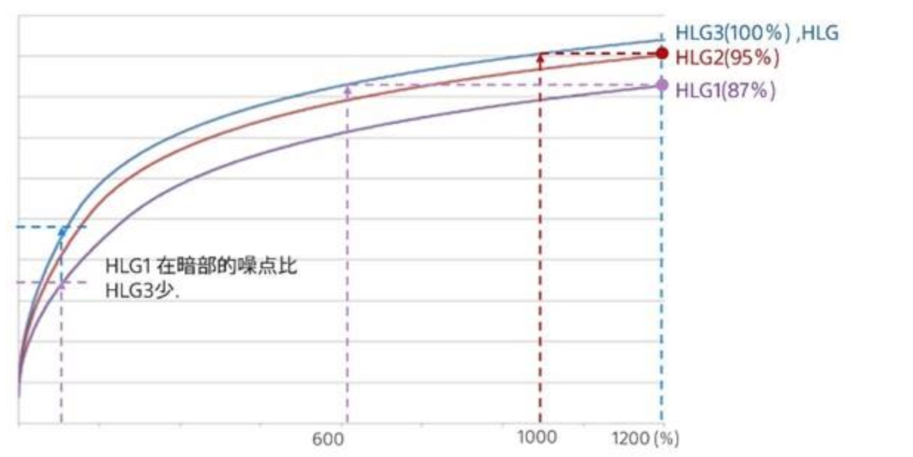

使用Final Cut Pro预处理Sony HLG视频
过年拍了一些视频和照片，使用的是sony a7iii，在视频拍摄中，我尝试使用了自带的pp10，也就是HLG2伽马曲线，BT2020色彩空间的配置。由于在之前看了一些YouTube视频，很多播主都推荐使用HLG格式，所以我对拍摄的视频还是有很大期待的。
关于HLG
- HLG 相當於HDR標準Hybrid Log-Gamma、ITU-R BT.2100。
- HLG1 強調雜訊消除。不過，拍攝會限制在比使用HLG2或HLG3更窄的動態範圍。
- HLG2 提供動態範圍與雜訊消除的平衡。
- HLG3 比HLG2更寬的動態範圍。不過，雜訊可能會增加。
HLG1 HLG2 和 HLG3皆以相同特性套用迦瑪曲線，不過每一個所提供的動態範圍與雜訊消除的平衡不一樣。每一個都有不同的視訊輸出等級上限，如下所示：HLG1：大約87%，HLG2：大約95%，HLG3：大約100%。
看看以下圖示，就知道每個HLG的差異特性了!
